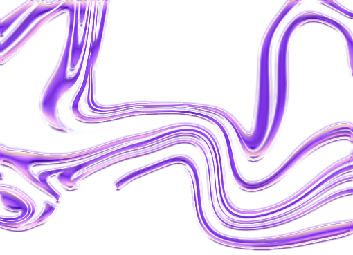
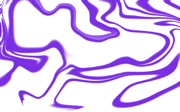

Olia Lialina, ‘My Boyfriend came back from the war’, 1996

Mit einem Computer kann man Kunst und Schönheit schaffen

JODI is a net art group consisting of Joan Heemskerk and Dirk Paesmans. The group was one of the first to use the Internet’s creative possibilities. Already around 1994 they were beginning to use the Internet as material.
and there is more!
When the machines are on and your fingers are on the keyboard, you are in connection with some space that is beyond the screen. And this space is only there when the machines are on. It’s a new world in which you enter.
AI ist keine Kunst!
AI macht keine Kunst!